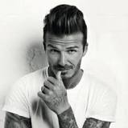
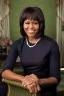

edades de famosos
Amparo Grisales
La diva colombiana nacio el 19 de septiembre de 1956; tiene 60 años,.

David Beckham
El ex-futbolísta inglés nacio el 2 de mayo de 19875; tiene 42 años.

Enrique Iglesias
El canta-autor español nacio el 8 de mayo de 1975; tiene 42 años.
Michelle Obama
La ex-primera dama de los estados unidos nacio el 17 de enero de 1964; tiene 53 años.

Ozuna
El cantante de regagueton y trap puertorriqueño nacio el 13 de marzo de 1992; tiene 25 años.

Adam Levine
El cantante, compositor, guitarrista, actor y vocalista de la banda maroon 5, nació el 18 de marzo de 1979; tiene 38 años